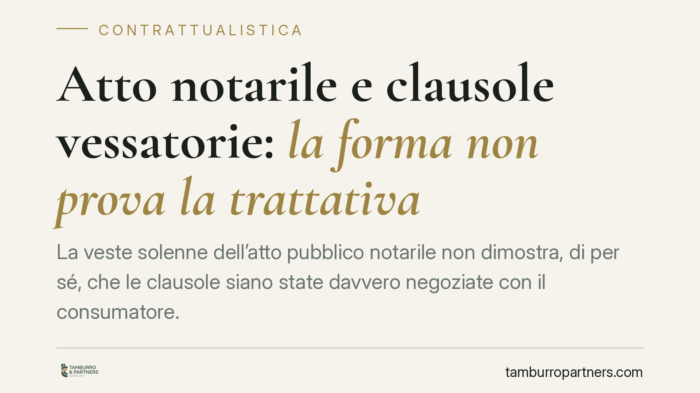

Atto notarile e clausole vessatorie: la forma non prova la trattativa
La veste solenne dell'atto pubblico notarile non dimostra, di per sé, che le clausole siano state davvero negoziate con il consumatore. Secondo un recente orientamento di merito, spetta al professionista provare in modo positivo che la controparte ha potuto incidere sul contenuto del contratto. Un principio che pesa su contratti immobiliari e di finanziamento.

Il caso e il principio
Un recente orientamento della giurisprudenza di merito torna su una questione pratica e ricorrente: il fatto che un contratto sia stato stipulato davanti a un notaio, nella forma dell'atto pubblico, basta a escludere la natura vessatoria di certe clausole?
La risposta è negativa. La solennità della forma non equivale a prova della trattativa individuale. In altre parole, il passaggio dal notaio garantisce la provenienza e la data certa dell'atto, ma non attesta che il consumatore abbia potuto discutere e modificare le singole pattuizioni.
> Nota di verifica. La pronuncia citata nelle prime versioni di questo contributo (indicata come Corte d'Appello di Palermo, Sez. III, n. 1484/2026) non risulta ad oggi verificabile negli estremi e nell'anno. La riportiamo perciò solo come *orientamento di merito da confermare*: i principi esposti restano validi perché radicati nella normativa e nella giurisprudenza consolidata sulle clausole vessatorie.
Inquadramento normativo
Occorre distinguere due regimi che spesso vengono confusi.
Il Codice del Consumo (D.Lgs. 206/2005) disciplina le clausole vessatorie nei contratti tra professionista e consumatore. L'art. 33 presume vessatorie le clausole che determinano un significativo squilibrio dei diritti e degli obblighi a carico del consumatore. L'art. 34, commi 4 e 5, prevede però un'eccezione: la vessatorietà è esclusa quando le clausole sono state oggetto di trattativa individuale, e l'onere di provare tale trattativa grava sul professionista.
Diverso è il meccanismo degli artt. 1341 e 1342 del Codice civile, che riguarda le condizioni generali di contratto e i moduli o formulari predisposti da una parte. Qui la tutela passa per la specifica approvazione per iscritto (la cosiddetta "doppia firma"). È un regime formale, applicabile anche fuori dai rapporti di consumo.
La differenza è sostanziale: nel Codice del Consumo non basta la firma, nemmeno quella apposta davanti al notaio. Serve la dimostrazione di una negoziazione effettiva.
Conoscere non equivale a negoziare
È il punto centrale. Il consumatore può aver letto il contratto, averlo compreso, averlo sottoscritto in piena consapevolezza. Nulla di tutto ciò prova che abbia trattato le clausole.
La trattativa individuale richiede che il consumatore abbia avuto la possibilità concreta di incidere sul contenuto: proporre modifiche, ottenere varianti, discutere l'equilibrio delle prestazioni. Un testo predisposto unilateralmente e sottoposto "in blocco" alla firma non diventa negoziato solo perché letto ad alta voce dal notaio o perché accompagnato da spiegazioni.
La forma pubblica certifica l'identità delle parti e la volontà espressa in quel momento. Non certifica il processo che ha portato a quel testo.
Implicazioni pratiche
L'impatto si avverte soprattutto nei contratti immobiliari e di finanziamento, dove la mediazione notarile è frequente e dove compaiono clausole potenzialmente squilibrate: penali, decadenze, foro esclusivo, limitazioni di responsabilità.
Per il professionista (venditore, costruttore, intermediario) l'atto pubblico non è uno scudo. In caso di contestazione, dovrà ricostruire e documentare come si è svolta la trattativa.
Per il consumatore si apre un margine di difesa: la stipula notarile non preclude di eccepire la vessatorietà di una clausola e di chiederne la nullità di protezione, che colpisce la singola pattuizione lasciando in vita il resto del contratto.
Cosa fare in concreto
- Se sei un professionista: conserva traccia scritta delle fasi negoziali (bozze, scambi di email, controproposte) che dimostrino l'effettiva incidenza della controparte sul testo.
- Se sei un professionista: verifica preventivamente le clausole potenzialmente squilibrate; è opportuno sottoporre i contratti-tipo a una revisione delle pattuizioni critiche.
- Se sei un consumatore: non dare per scontato che la stipula notarile renda il contratto inattaccabile; richiedi e conserva copia delle bozze ricevute prima della firma.
- Se sei un consumatore: individua le clausole che ti impongono oneri sproporzionati e valuta l'eccezione di vessatorietà entro i termini utili.
- In entrambi i casi: distingui con precisione il regime applicabile (artt. 33-34 Cod. Consumo oppure artt. 1341-1342 c.c.), perché cambiano requisiti e onere della prova.
---
*Contributo informativo a cura di Tamburro & Partners Avvocati – Avv. Giuseppe Tamburro. Non costituisce parere legale.*
Ogni contratto ha il suo equilibrio.
Se vuoi una revisione delle clausole o una redazione su misura, scrivi allo studio. Ti rispondiamo entro un giorno lavorativo.